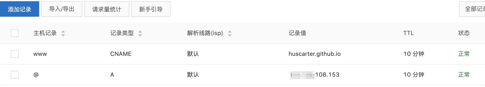

github搭建自己的博客
之前自己在CSDN和163上写过博客，后来出现了简书于是就转移到了简书。但是简书发生了一起侮辱程序猿的事件，想想觉得既然自己身为程序员干嘛还要用人家的博客平台呢，用我们程序员自己打造的平台那不是更好，于是使用了github+hexo自己去生成自己博客。现在自己购买了虚拟服务器和域名，这样就以更加自由的玩耍了！要想通过github建立自己美观的博客需要完成以下这些步骤。
github仓库创建
github是开发人员的一个无价之宝，不仅提供了各种开源项目，其实它还具有博客搭建的功能。github搭建博客简单方便，它像维护项目一样维护自己的博客。
首先自己去github注册帐号
注册帐号步骤略！
创建自己的博客仓库
2.1 格式有要求，必须是[用户名].github.io的形式 (比如huscarter.github.io)。建好之后的博客地址就是 https://[用户名].github.io （比如 https://huscarter.github.io ）。创建静态页面(html)展示自己博客的内容
3.1 创建一个index.html，将作为我们博客的首页。这种方式全部使用自己手写html，需要我们有一定的前端开发能力，而且做出来的页面可能不是很美观。
3.2 下一个部分将介绍如何使用hexo创建自己美观的博客。
hexo博客搭建
hexo是一个快速、简洁且高效的博客框架。它使用 Markdown（或其他渲染引擎）解析文章，在几秒内，即可利用靓丽的主题生成静态网页。很多开发设计者提供了许多hexo的主题，我们可以很方便的将自己喜欢主题应用到我们的博客上，妈妈再也不用担心我写的博客样式很难看了。下面我们来看下如何使用hexo搭建博客。
hexo安装
1.1 安装git
直接去官网下载安装即可，不需要其他配置；如果已经安装则跳过此步骤。
如果是mac用户需要先安装xcode，并通过xcode安装命令行工具，操作如下。1
xcode -> Preferences -> Download -> Command Line Tools -> Install
1.2 安装node.js
1.3 安装hexo
上面2步安装完成后，即可使用 npm 安装 hexo，命令如下。
1
npm install -g hexo-cli
hexo 的使用
2.1 建站，运行如下命令
1
2
3hexo init <folder> // 初始化目录
cd <folder>
npm install // 创建hexo站点文件2.2 运行成功之后会在目录下生成如下文件
1
2
3
4
5
6
7├── _config.yml // 重要：全站的配置文件，比如全站的标题、作者、语言和分页等c
├── package.json // 应用程序的信息,一般不用管
├── scaffolds // 模版文件夹
├── source // 重要：资源文件夹是存放用户资源的地方
| ├── _about // 可在此目录下建立index.md用来写博客中的关于内容
| └── _posts // 我们存放博客文件的目录
└── themes // 重要：存放博客主题的目录2.3 创建第一篇博客
在_post书目录下建立文件the first blog.md，博客内容参照
1
2
3
4
5
6
7
8title: 第一篇博客 // 本篇博客的标题
date: 2013-03-09 10:29:44 // 本篇博客创建的时间
categories:
- ANDROID // 类目
tags:
- BLOG // 标签
description: 博客模版 // 博客简介，用于博客列表的展示
我的第一篇博客 // 正文2.4 访问自己的博客
使用命令行工具进入到hexo的目录运行如下命令，成功后在浏览器输入http://localhost:4000/访问。1
hexo s // hexo server 开启服务
hexo 基础命令介绍
下面是常用的一些命令
1
2
3
4
5
6
7hexo init <folder> // 初始化目录
npm install // 创建hexo站点文件（注意要进入folder之后再运行哦）
hexo g // hexo generate 生成静态访问文件
hexo s // hexo server 开启服务，关闭服务使用快捷键 "control+c"
hexo clean // 清除缓存文件和已生成的静态文件，若您对站点的更改不生效，您可能需要运行此命令
hexo d // hexo deploy 部署网站
hexo d -g // 等于 hexo d 和 hexo g
hexo 主题应用
自己通过markdown写的博客主题是默认的，巨丑无比。hexo 提供了很多漂亮的主题供我们使用，加入的方法也很简单。
进入hexo 主题网址，点击自己喜欢的”主题名称”即可进入主题对应的github网址。
安装主题的命令一般会在主题项目的README文件中有介绍。
下面是maupassant主题安装的命令参照：1
2
3
4
5
6
7
8
9// 进入你的hexo项目目录
cd hexo
// 通过git拉取主题到hexo/themes目录
git clone https://github.com/tufu9441/maupassant-hexo.git themes/maupassant
// 安装渲染模块
npm install hexo-renderer-pug --save
npm install hexo-renderer-sass --save
// 将站点_config.yml中的themes配置成你拉取的主题名称
_config.yml-->theme: maupassant每个主题也有自己_config.yml文件用于控制主题的样式和内容，它们都放在themes目录下。
hexo 关联 github
hexo博客搭建以及hexo主题运用都是和github无关的，使用hexo创建的博客也是运行在本地。那接下来将介绍如何把本地写的hexo博客和我们创建的github仓库关联起来。
安装hexo的github插件
1
npm install hexo-deployer-git --save
在_config.yml里配置github信息
1
2
3
4deploy:
type: git
repo: https://github.com/xxx/xxx.github.io.git // 你的github博客仓库地址
branch: master // 主分支运行命令将博客发布到github仓库
1
2
3hexo g // 生成
hexo d // 部署
hexo d -g // 生成+部署(hexo g+hexo d)一些注意事项
4.1 因为source目录是我们的资源目录，部署发布到github也是将source的内容生成静态文件发布，所以如果你有单独想上传的文件请将它放到source目录下。
4.2 建议最好在github上建立另外一个仓库用来上传这个hexo，当作hexo站点的版本控制；这样当更换电脑写博客时，只需要从github拉取文件覆盖即可。
博客关联自己的域名
github的博客访问网址都是https://[xxx].github.io的格式，如果你有自己域名（可以去阿里云购买），我们可以将博客挂载到购买的域名上，变得更加高大上！
github博客仓库绑定域名
1
github博客仓库 -> setting -> GitHubPages -> Customdomain ->输入域名[如www.huscarter.com]
hexo本地博客添加CNAME文件
1
hexo博客目录 -> source目录 -> 创建CNAME文件 -> 在文件里写入你的域名[如www.huscarter.com]
将本地修改发布到github
1
hexo d -g
设置域名解析
3.1 查看你github博客的IP地址，可通过如下命令获取
1
在终端输入 ping [xxxx].github.io
3.2 给你的域名添加解析记录
找到域名解析设置入口
1
域名控制台[一般是阿里云控制台] -> 找到你的域名 -> 解析
添加解析记录，最后设置成如下样子就行

之后在浏览器里输入的域名
参考